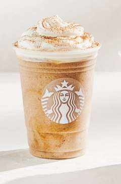

Follow the cup.
Scroll backward through the story—coffee first, coffeehouse next, then a new chapter in the Philippines.
Begin the journey ↓
TAP THE CUPCoffee before coffeehouse.
Starbucks began as a single store in Seattle’s historic Pike Place Market, offering fresh-roasted whole bean coffee.
A cup changes direction.
Howard Schultz first encountered Starbucks in 1981 and joined the company the following year.
The cup becomes a place.
Inspired by Italian coffee bars, the vision expands from coffee retail into a warm place for conversation, ritual and community.
The story moves forward.
In 1987, Starbucks entered a new era that carried the coffeehouse idea far beyond its Seattle beginnings.
A new market. A familiar ritual.
The first Starbucks store in the Philippines opened on December 4, 1997 at the 6750 Ayala Building in Makati City.
Not a normal beverage page.
This fork now uses GSAP as a cinematic storytelling engine: one drink, one continuous journey, and no product-card clutter.
Replay the story ↑